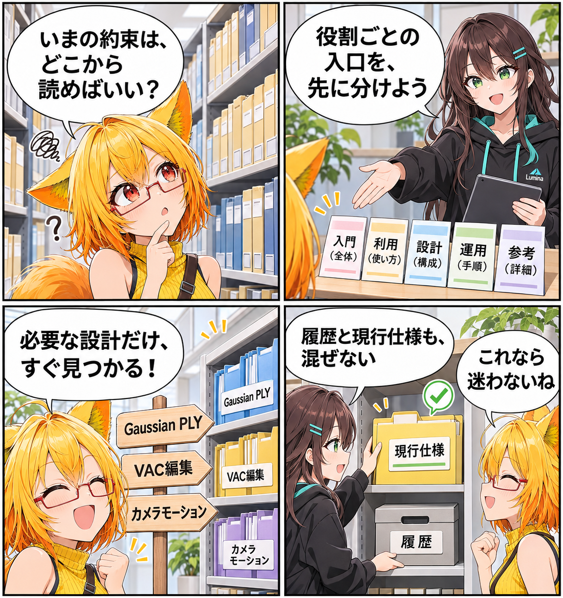

2026.11.28 / Development
迷子にしない。設計書の入口を整えた日
設計文書の入口と現行仕様への参照を整理し、必要な情報へ迷わず進める道筋を整えた記録です。
集計期間は2026-11-27 03:00:00 JSTから2026-11-28 02:59:59 JSTまで、対象はViewerの
main です。集計終了時点のHEADは b3b65a0902e523e41f33cab99744de3ff6474619、対象コミットは2件です。未コミット差分は期間内の実装事実を確定できないため実績に含めていません。
仕様の階層を先に示す
ドキュメント入口に、要件・製品仕様、基本設計、詳細設計、品質・運用、履歴・改修候補という役割を整理しました。現行仕様、検証中の設計、過去の記録を同じものとして扱わないための案内です。すべてを読むのではなく、作業に必要な正本だけへ進めます。
機能別の道しるべを追加
作業別の索引には、Gaussian PLY直接描画、VACエディタ、Desktopカメラモーションの詳細設計への参照を追加しました。現行アプリ仕様にも、対応する3DGS PLYをVAB/VBGに変換せず直接描画すること、静的展示モデルには骨・表情・IKがないこと、背景・アイテムでの扱いと保存場所を明記しています。
履歴と未解決事項を混ぜない
作業ログはアーカイブへ整理し、未解決バックログは現行設計の正本ではないと明示しました。過去の調査結果を残しながらも、実装を変えるときは現在のコードと照合する、という境界を保ちます。
4コマの話
ろひが資料の山から「今の約束はどれ？」と探し、ルミナが役割ごとの入口を示します。必要な設計だけを選んで進め、最後は履歴と現行仕様が混ざらない棚に整う、小さな文書整理の一日です。
まとめ
今回は、機能を増やす前に参照の道筋を整えた記録です。設計の正本、作業別の入口、履歴と未解決事項の境界を明確にし、VRASを扱うときに必要な情報へ迷わず進める状態を目指しました。